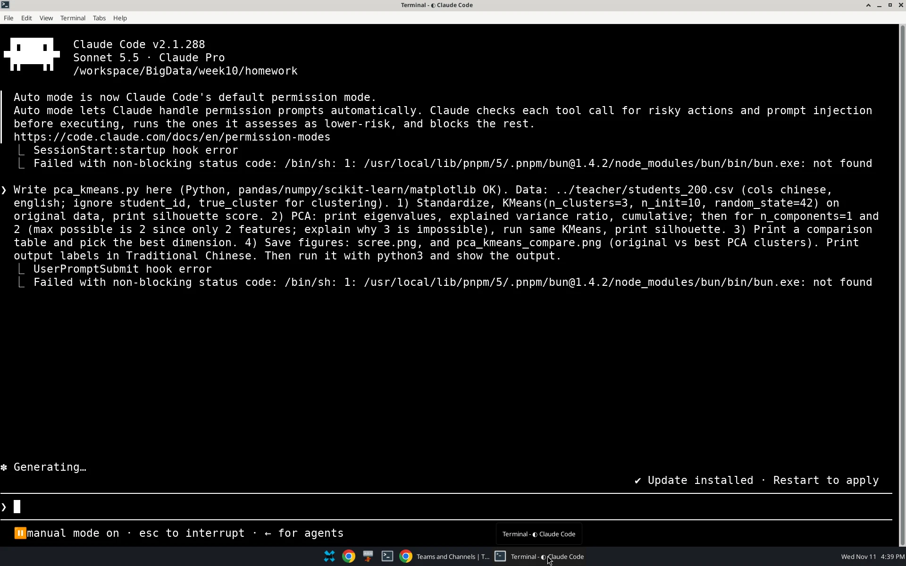
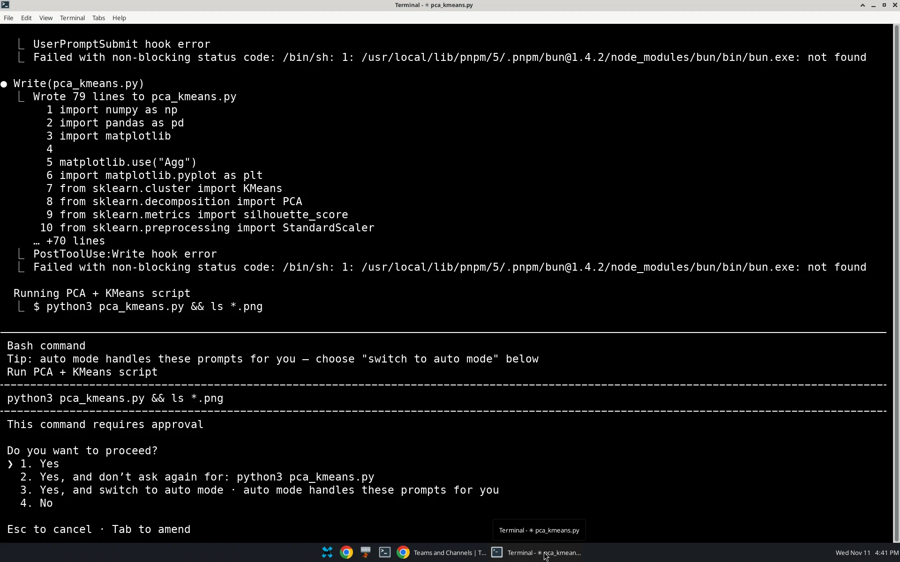
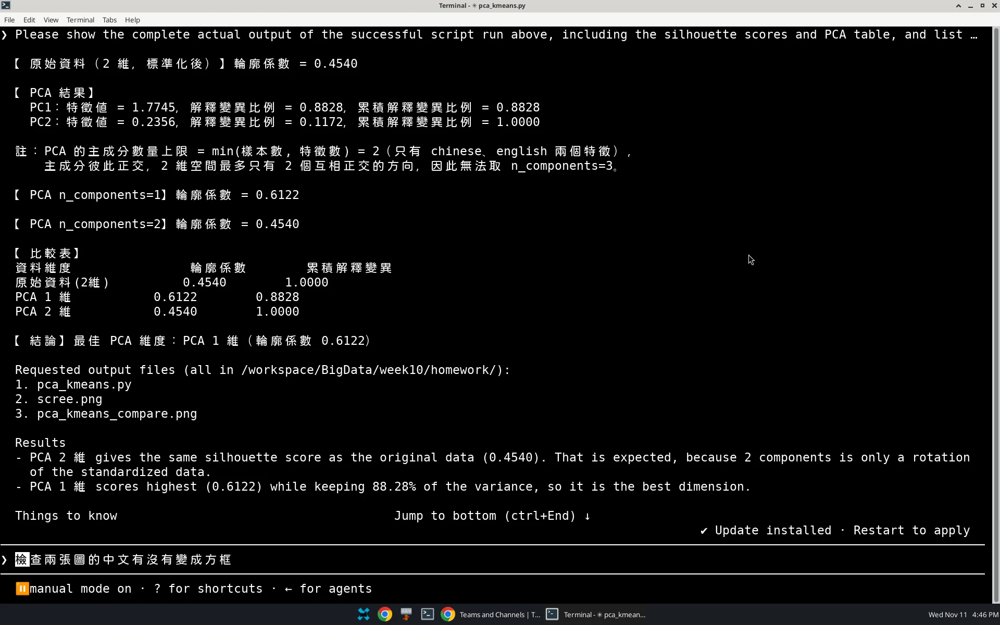
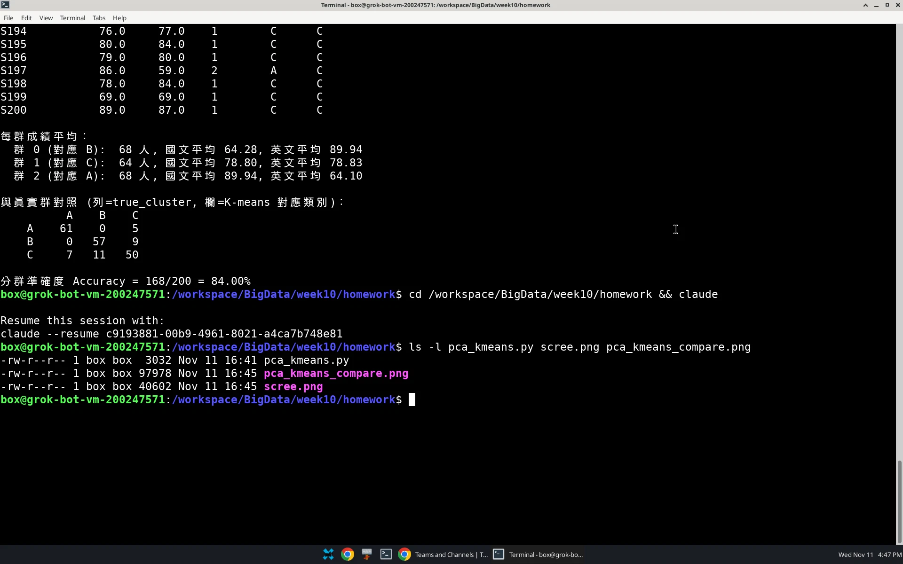
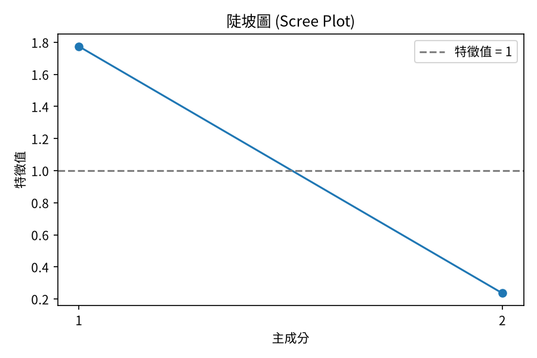
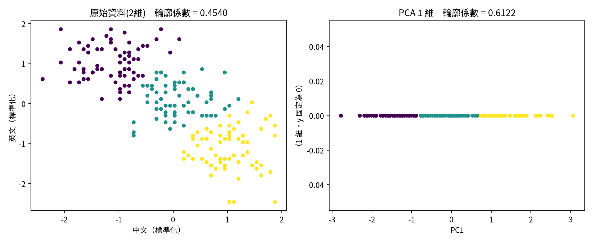

使用 AI 工具：Claude Code（Claude Pro），在終端機中下指令請 AI 撰寫並執行程式。




import numpy as np
import pandas as pd
import matplotlib
matplotlib.use("Agg")
import matplotlib.pyplot as plt
from sklearn.cluster import KMeans
from sklearn.decomposition import PCA
from sklearn.metrics import silhouette_score
from sklearn.preprocessing import StandardScaler
plt.rcParams["font.sans-serif"] = ["Noto Sans CJK TC", "Noto Sans CJK JP", "Microsoft JhengHei", "PingFang TC", "SimHei", "DejaVu Sans"]
plt.rcParams["axes.unicode_minus"] = False
df = pd.read_csv("../teacher/students_200.csv")
X = StandardScaler().fit_transform(df[["chinese", "english"]])
def run_kmeans(data):
labels = KMeans(n_clusters=3, n_init=10, random_state=42).fit_predict(data)
return labels, silhouette_score(data, labels)
# 1) 原始資料
labels0, s0 = run_kmeans(X)
print(f"【原始資料（2 維，標準化後）】輪廓係數 = {s0:.4f}")
# 2) PCA
pca = PCA().fit(X)
ev, evr = pca.explained_variance_, pca.explained_variance_ratio_
cum = np.cumsum(evr)
print("\n【PCA 結果】")
for i in range(len(ev)):
print(f" PC{i+1}：特徵值 = {ev[i]:.4f}，解釋變異比例 = {evr[i]:.4f}，累積解釋變異比例 = {cum[i]:.4f}")
print("\n註：PCA 的主成分數量上限 = min(樣本數, 特徵數) = 2（只有 chinese、english 兩個特徵），")
print(" 主成分彼此正交，2 維空間最多只有 2 個互相正交的方向，因此無法取 n_components=3。")
results = {"原始資料(2維)": (s0, X, labels0)}
for k in (1, 2):
Z = PCA(n_components=k).fit_transform(X)
lab, s = run_kmeans(Z)
results[f"PCA {k} 維"] = (s, Z, lab)
print(f"\n【PCA n_components={k}】輪廓係數 = {s:.4f}")
# 3) 比較表
print("\n【比較表】")
print(f"{'資料維度':<14}{'輪廓係數':>10}{'累積解釋變異':>14}")
cums = {"原始資料(2維)": 1.0, "PCA 1 維": cum[0], "PCA 2 維": cum[1]}
for name, (s, _, _) in results.items():
print(f"{name:<14}{s:>10.4f}{cums[name]:>14.4f}")
pca_names = ["PCA 1 維", "PCA 2 維"]
best = max(pca_names, key=lambda n: results[n][0])
print(f"\n【結論】最佳 PCA 維度：{best}（輪廓係數 {results[best][0]:.4f}）")
# 4) 圖
plt.figure(figsize=(6, 4))
plt.plot([1, 2], ev, "o-")
plt.axhline(1, ls="--", c="gray", label="特徵值 = 1")
plt.xticks([1, 2])
plt.xlabel("主成分")
plt.ylabel("特徵值")
plt.title("陡坡圖 (Scree Plot)")
plt.legend()
plt.tight_layout()
plt.savefig("scree.png", dpi=150)
fig, ax = plt.subplots(1, 2, figsize=(11, 4.5))
for a, (name, xs) in zip(ax, [("原始資料(2維)", None), (best, None)]):
s, Z, lab = results[name]
# 1 維資料補 0 作為 y 軸以便繪圖
y = Z[:, 1] if Z.shape[1] > 1 else np.zeros(len(Z))
a.scatter(Z[:, 0], y, c=lab, cmap="viridis", s=18)
a.set_title(f"{name} 輪廓係數 = {s:.4f}")
a0, a1 = ax
a0.set_xlabel("中文（標準化）"); a0.set_ylabel("英文（標準化）")
a1.set_xlabel("PC1"); a1.set_ylabel("PC2" if best == "PCA 2 維" else "（1 維，y 固定為 0）")
plt.tight_layout()
plt.savefig("pca_kmeans_compare.png", dpi=150)
【原始資料（2 維，標準化後）】輪廓係數 = 0.4540
【PCA 結果】
PC1：特徵值 = 1.7745，解釋變異比例 = 0.8828，累積解釋變異比例 = 0.8828
PC2：特徵值 = 0.2356，解釋變異比例 = 0.1172，累積解釋變異比例 = 1.0000
註：PCA 的主成分數量上限 = min(樣本數, 特徵數) = 2（只有 chinese、english 兩個特徵），
主成分彼此正交，2 維空間最多只有 2 個互相正交的方向，因此無法取 n_components=3。
【PCA n_components=1】輪廓係數 = 0.6122
【PCA n_components=2】輪廓係數 = 0.4540
【比較表】
資料維度 輪廓係數 累積解釋變異
原始資料(2維) 0.4540 1.0000
PCA 1 維 0.6122 0.8828
PCA 2 維 0.4540 1.0000
【結論】最佳 PCA 維度：PCA 1 維（輪廓係數 0.6122）


| 資料維度 | Silhouette score | 累積解釋變異 |
|---|---|---|
| 原始資料（2 維，標準化） | 0.4540 | 100.00% |
| PCA 1 維 | 0.6122 | 88.28% |
| PCA 2 維 | 0.4540 | 100.00% |
結論：最適降維維度為 PCA 1 維（silhouette score 0.6122，高於原始資料的 0.4540）。